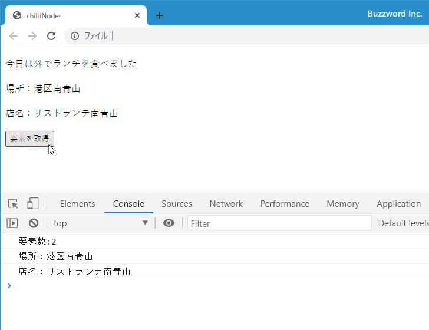
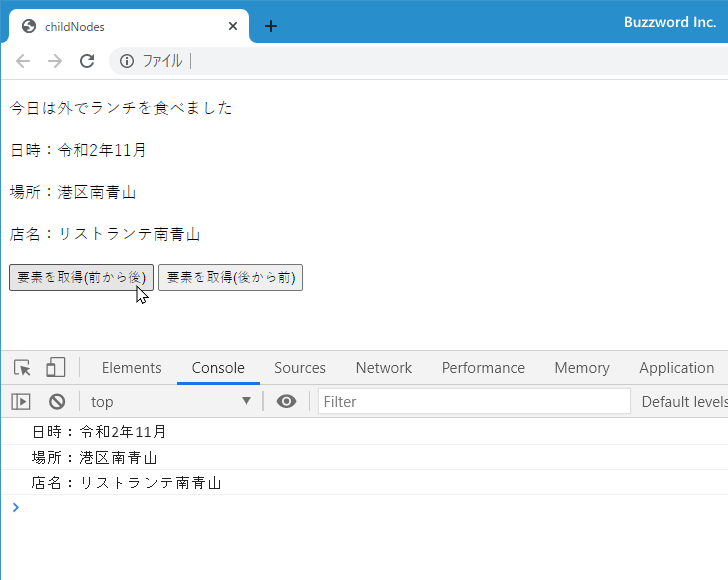
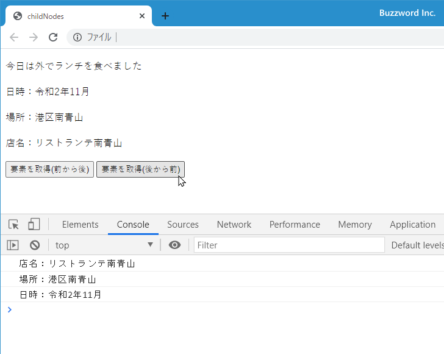
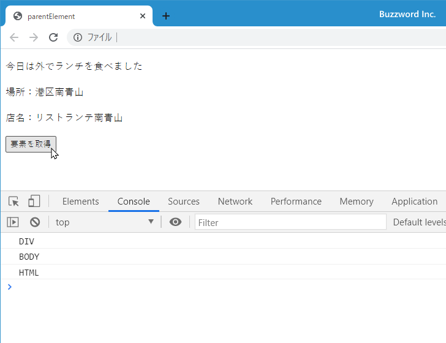

- Home ›
- JavaScript入門 ›
- DOM入門
要素ノードの子・親・兄弟要素のノードを取得
子ノードの一覧などを取得した場合、取得したノードは要素ノードやテキストノード、コメントノードなど色々な種類のノードが含まれますが、要素ノードだけが必要な場合があります。その場合には、特定の要素ノードに対して子要素や親要素、また同じ階層にある兄弟要素だけを取得するためのプロパティを利用すると便利です。ここでは特定の要素ノードから見た子要素、親要素、兄弟要素のノードを取得する方法について解説します。
※ すべてのノードを対象に子や孫ノードを取得する方法については「ノードの子・親・兄弟ノードを取得(Node.childNodes他)」を参照されてください。
すべての子要素を取得する
Document オブジェクトの getElementById メソッドや querySelector メソッドなどを使って要素ノードを取得したあと、 ParentNode オブジェクトの children プロパティを参照することで、この要素ノードの 1 つ下の階層にある子要素のノードをすべて取得することができます。書式は次の通りです。
node.children
このプロパティは参照専用です。戻り値として HTMLCollection オブジェクトを返します。
HTMLCollection オブジェクトは複数の要素ノードの集合です。 HTMLCollection オブジェクトでは length プロパティと item メソッドが用意されており、次のように取得した要素ノードの数を取得したり、指定した要素ノードを取り出すことができます。
let element = document.getElementById('main');
let echildren = element.children;
// 取得した要素の数を取得
let len = echildren.length;
// インデックスを指定して要素を取得
let element = echildren.item(0);
// 次の形式でもインデックスを指定して要素を取得
let element = echildren[0];
子要素が複数あった場合、 HTML ページの中で記述された順番にインデックスが割り当てられています。インデックスは最初が 0 で 1, 2, 3... と続いていきます。子要素が見つからなかった場合、 children プロパティは length が 0 の HTMLCollection オブジェクトを返します。
次のサンプルを見てください。
<!DOCTYPE html>
<html lang="ja">
<head>
<meta charset="UTF-8">
<title>childNodes</title>
</head>
<body>
<p>今日は外でランチを食べました</p>
<div id="box">
<p>場所：港区南青山</p>
<p>店名：リストランテ南青山</p>
</div>
<button onClick="getElements();">要素を取得</button>
<script>
function getElements(){
let element = document.getElementById('box');
let echildren = element.children;
let len = echildren.length;
console.log("要素数:" + len);
for (let i = 0; i < len; i++){
console.log(echildren.item(i).textContent);
}
}
</script>
</body>
</html>
表示されたボタンをクリックすると、 id 属性の値が box の要素ノードを取得し、その要素の子要素のノードをすべて取得します。そのあとで子要素のノードの数と、ノード毎にノードのテキストを出力しています。

子ノードをすべて取得した場合、 HTML の記述の仕方によっては空白ノードが含まれますが、今回は子要素のノードだけを取得したのでテキストノードは含まれません。
最初の子要素と最後の子要素を取得する
ParentNode オブジェクトの firstElementChild プロパティを参照することで、このノードの 1 つ下の階層にある子要素のノードの中の最初の要素を取得することができます。書式は次の通りです。
node.firstElementChild
このプロパティは参照専用です。戻り値として Element オブジェクトを返します。子要素がなかった場合は null が返ります。
ParentNode オブジェクトの lastElementChild プロパティを参照することで、このノードの 1 つ下の階層にある子要素のノードの中の最後の要素を取得することができます。書式は次の通りです。
node.lastElementChild
このプロパティは参照専用です。戻り値として Element オブジェクトを返します。子ノードがなかった場合は null が返ります。
例えば特定のノードの子要素のノードの中で最初と最後の子要素のノードを取得するには次のように記述します。
let element = document.getElementById('main');
let efirst = element.firstElementChild;
let elast = element.lastElementChild;
同じ階層の次の要素ノードと前の要素ノードを取得する
NonDocumentTypeChildNode オブジェクトの nextElementSibling プロパティを参照することで、この要素ノードと同じ階層にある次の要素ノードを取得することができます。書式は次の通りです。
node.nextElementSibling
このプロパティは参照専用です。戻り値として Elemment オブジェクトを返します。子要素がなかった場合は null が返ります。
NonDocumentTypeChildNode オブジェクトの previousElementSibling プロパティを参照することで、この要素ノードと同じ階層にある一つ前の要素ノードを取得することができます。書式は次の通りです。
node.previousElementSibling
このプロパティは参照専用です。戻り値として Node オブジェクトを返します。子ノードがなかった場合は null が返ります。
例えば特定のノードの同じ階層にある次のノードと一つ前のノードを取得するには次のように記述します。
let element = document.getElementById('main');
let enext = element.nextElementSibling;
let eprev = element.previousElementSibling;
次のサンプルを見てください。
<!DOCTYPE html>
<html lang="ja">
<head>
<meta charset="UTF-8">
<title>nextElementSibling</title>
</head>
<body>
<p>今日は外でランチを食べました</p>
<div id="box">
<p>日時：令和2年11月</p>
<!-- お店の情報 -->
<p>場所：港区南青山</p>
<p>店名：リストランテ南青山</p>
</div>
<button onClick="getElements(1);">要素を取得(前から後)</button>
<button onClick="getElements(2);">要素を取得(後から前)</button>
<script>
function getElements(direct){
let element = document.getElementById('box');
if (direct == 1){
let echild = element.firstElementChild;
while (echild){
console.log(echild.textContent);
echild = echild.nextElementSibling;
}
}else{
let echild = element.lastElementChild;
while (echild){
console.log(echild.textContent);
echild = echild.previousElementSibling;
}
}
}
</script>
</body>
</html>
表示されたボタンをクリックすると、 id 属性の値が box の要素ノードを取得したあと、最初の子要素のノードを取得します。そして同じ階層の要素ノードを前から後ろに向かって順に取得していきます。取得した要素ノードは要素のテキストを出力しています。

また表示されたボタン(後から前)をクリックすると、 id 属性の値が box の要素ノードを取得したあと、最後の子要素のノードを取得します。そして同じ階層の要素ノードを後ろから前に向かって順に取得していきます。取得した要素ノードは要素のテキストを出力しています。

親要素のノードを取得する
Node オブジェクトの parentElement プロパティを参照することで、このノードの親要素のノードを取得することができます。書式は次の通りです。
node.parentElement
このプロパティは参照専用です。戻り値として Element オブジェクトを返します。 Document ノードの親ノードを取得した場合は null が返ります。
例えば特定のノードの親要素のノードを取得するには次のように記述します。
let element = document.getElementById('main');
let eparent = element.parentElement;
次のサンプルを見てください。
<!DOCTYPE html>
<html lang="ja">
<head>
<meta charset="UTF-8">
<title>parentElement</title>
</head>
<body>
<p>今日は外でランチを食べました</p>
<div>
<!-- お店の情報 -->
<p>場所：港区南青山</p>
<p id="shop">店名：リストランテ南青山</p>
</div>
<button onClick="getElements();">要素を取得</button>
<script>
function getElements(direct){
let element = document.getElementById('shop');
let eparent = element.parentElement;
while (eparent){
console.log(eparent.nodeName);
eparent = eparent.parentElement;
}
}
</script>
</body>
</html>
表示されたボタンをクリックすると、 id 属性の値が shop の要素ノードを取得したあと、順に親要素のノードを取得していきます。取得したノードはノードの名前を出力しています。

-- --
特定の要素ノードから見た子要素、親要素、兄弟要素のノードを取得する方法について解説しました。
( Written by Tatsuo Ikura )

著者 / TATSUO IKURA
初心者～中級者の方を対象としたプログラミング方法や開発環境の構築の解説を行うサイトの運営を行っています。